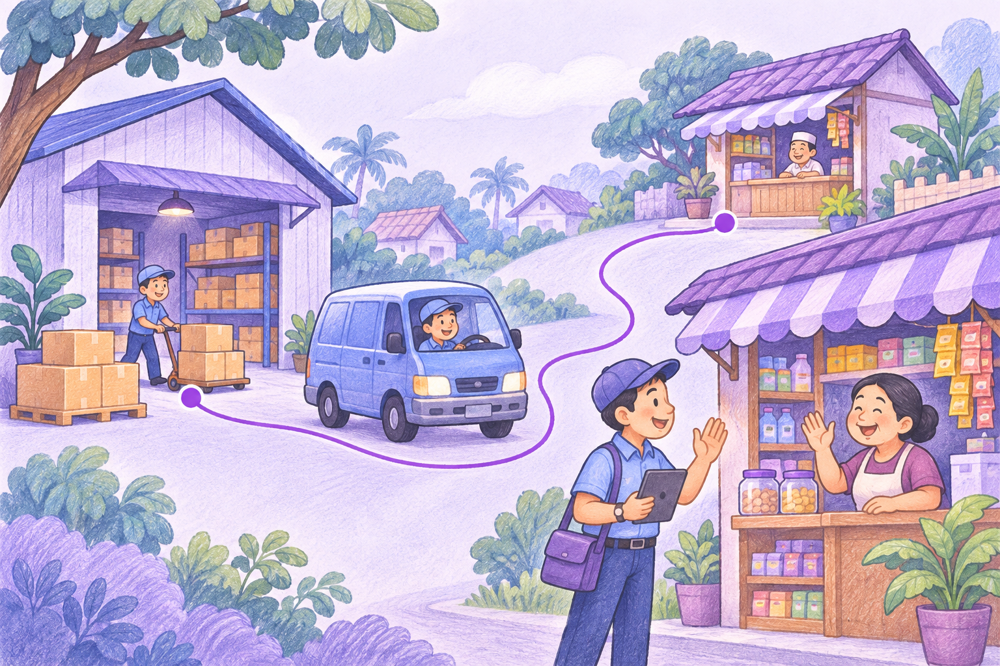

▦
Kenali setiap outlet
Bangun fondasi distribusi dari data outlet yang tertata, mulai dari identitas, lokasi, hingga catatan untuk kunjungan.
DISTRIBUTION MANAGEMENT SYSTEM
Kelola outlet, rencanakan rute, dan dukung transaksi langsung di toko dengan stok yang dibawa sales dalam satu distribution management system.

PLATFORM
Salesteam dikembangkan sebagai distribution management system yang menghubungkan data operasional dengan pekerjaan tim di lapangan.
Truk logistik → 4 toko tujuan
Bangun fondasi distribusi dari data outlet yang tertata, mulai dari identitas, lokasi, hingga catatan untuk kunjungan.
Tempatkan kunjungan dan pesanan dalam satu konteks, sehingga pekerjaan sales terhubung dengan kebutuhan distribusi.
Susun arah kunjungan berdasarkan outlet tujuan. Beri tim lapangan gambaran yang jelas sebelum memulai hari.
SALES & ROUTING
Sales adalah penghubung bisnis Anda dengan outlet. Selain merencanakan rute, sales membawa stok untuk melayani transaksi langsung saat kunjungan: pilih barang, serahkan ke toko, dan catat penjualan beserta pengurangan stok bawaan.
Tentukan urutan outlet yang akan dikunjungi sebagai panduan perjalanan tim sales.
Sales lapangan · Rute harian ilustratif
TRANSAKSI LANGSUNG DI TOKO
Sales tidak hanya menerima pesanan. Dengan stok di kendaraan, kebutuhan toko bisa langsung dilayani dalam rute kunjungan yang sama.
Contoh: 6 unit × Rp25.000. Angka dan alur merupakan ilustrasi.
UNTUK BERAGAM DISTRIBUTOR
Salesteam cocok untuk bisnis FMCG dan distributor jenis lainnya yang mengelola outlet, rute kunjungan, stok bawaan sales, serta transaksi di lapangan.
Makanan kemasan, minuman, dan kebutuhan harian: hubungkan stok yang dibawa sales dengan kunjungan ke toko dan transaksi langsung.
Kebutuhan tiap jenis distributor dapat dibahas sesuai proses bisnisnya.
CARA KERJA
Gambaran alur yang menjadi arah pengembangan Salesteam.
Siapkan outlet dan informasi pendukung distribusi.
Tentukan tujuan dan urutan rute sales.
Layani transaksi di toko dan catat barang terjual dari stok yang dibawa sales.
Gunakan catatan lapangan untuk perencanaan berikutnya.
Salesteam sedang dikembangkan. Diagram dan tampilan di halaman ini merupakan ilustrasi arah produk, bukan tangkapan layar aplikasi final.
Hubungi kami untuk membahas kebutuhan tim sales dan operasional Anda.
contact@salesteam.biz.id ↗